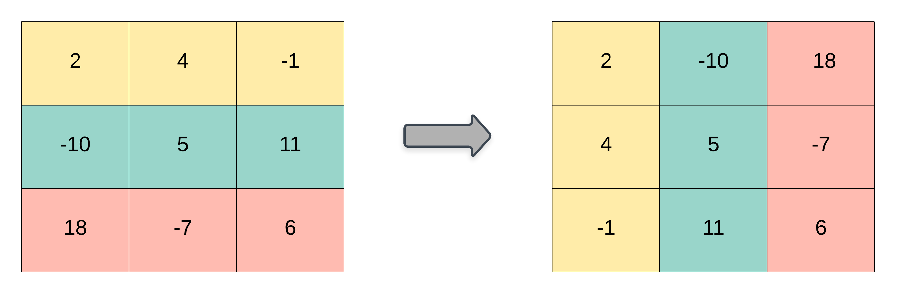

books / company-solutions / Array
867. 转置矩阵
| 题目信息 | 内容 |
|---|---|
| 难度 | 简单 |
| 核心模式 | 模拟：新建 n×m 矩阵，按 res[j][i] = matrix[i][j] 填充 |
| 时间复杂度 | O(m·n) |
| 空间复杂度 | O(m·n) |
题目与约束
给你一个二维整数数组 matrix， 返回 matrix 的 转置矩阵 。
矩阵的 转置 是指将矩阵的主对角线翻转，交换矩阵的行索引与列索引。

示例 1：
<strong>输入：</strong>matrix = [[1,2,3],[4,5,6],[7,8,9]]
<strong>输出：</strong>[[1,4,7],[2,5,8],[3,6,9]]
示例 2：
<strong>输入：</strong>matrix = [[1,2,3],[4,5,6]]
<strong>输出：</strong>[[1,4],[2,5],[3,6]]
提示：
-
m == matrix.length -
n == matrix[i].length -
1 <= m, n <= 1000 -
1 <= m * n <= 105 -
-109 <= matrix[i][j] <= 109
核心不变量
转置后矩阵尺寸由 m×n 变为 n×m，且对任意 i、j 恒有
res[j][i] == matrix[i][j]。
完整推导
思路推导
- 看清维度变化（不是简单旋转）
原矩阵 m 行 n 列。转置后变成 n 行 m 列。第 i 行第 j 列的元素，会跑到第 j 行第 i 列去。所以结果要先申请 n 行、每行 m 列。
- 直接双重循环搬元素
遍历原矩阵的每个 matrix[i][j]，把它写到 res[j][i]。一次遍历即可，顺序无关。
- 小例子（示例 2）
matrix = [[1,2,3],[4,5,6]]，m=2, n=3。结果应是 3 行 2 列：
- res[0][0]=1, res[0][1]=4
- res[1][0]=2, res[1][1]=5
- res[2][0]=3, res[2][1]=6
得 [[1,4],[2,5],[3,6]]，与示例一致。
- 为什么不能原地交换
只有当矩阵是方阵（m==n）时，交换 matrix[i][j] 与 matrix[j][i] 才可行。本题 m 与 n 可以不相等，尺寸都会变，所以必须新建矩阵。
Java 实现（transpose）
class Solution {
public int[][] transpose(int[][] matrix) {
int m = matrix.length; // 原行数
int n = matrix[0].length; // 原列数
// 转置后为 n 行 m 列
int[][] res = new int[n][m];
for (int i = 0; i < m; i++) {
for (int j = 0; j < n; j++) {
res[j][i] = matrix[i][j];
}
}
return res;
}
}
复杂度
- 时间：O(m·n)，需要访问原矩阵的每个元素恰好一次。
- 空间：O(m·n)，用于存放结果矩阵（必须新建，无法在原矩阵上完成）。
易错点与扩展（面试高频考点）
- 行列写反：结果尺寸是
new int[n][m]，索引是res[j][i]，两处都容易写颠倒。 - 误用原地交换：
matrix[i][j]与matrix[j][i]交换只适用于方阵；本题矩形可能越界或丢元素。 - 边界：题目保证 m,n ≥ 1，无需处理空矩阵，但严谨实现可加
if (matrix.length == 0) return new int[0][0];。 - 扩展（原地转置方阵）：若题目限定方阵并要求原地，则用
for i, for j>i交换对称元素即可，空间 O(1)。 - 扩展（旋转 90°）：若是"顺时针旋转 90°"，需先转置再左右翻转每一行，注意与纯转置区分。
力扣原题
C++ 实现
class Solution {
public:
vector<vector<int>> transpose(vector<vector<int>>& matrix) {
int m = matrix.size();
int n = matrix[0].size();
// 结果 n 行 m 列
vector<vector<int>> res(n, vector<int>(m));
for (int i = 0; i < m; ++i) {
for (int j = 0; j < n; ++j) {
res[j][i] = matrix[i][j];
}
}
return res;
}
};
Python 实现
class Solution:
def transpose(self, matrix: list[list[int]]) -> list[list[int]]:
m, n = len(matrix), len(matrix[0])
# 结果 n 行 m 列
res = [[0] * m for _ in range(n)]
for i in range(m):
for j in range(n):
res[j][i] = matrix[i][j]
return res